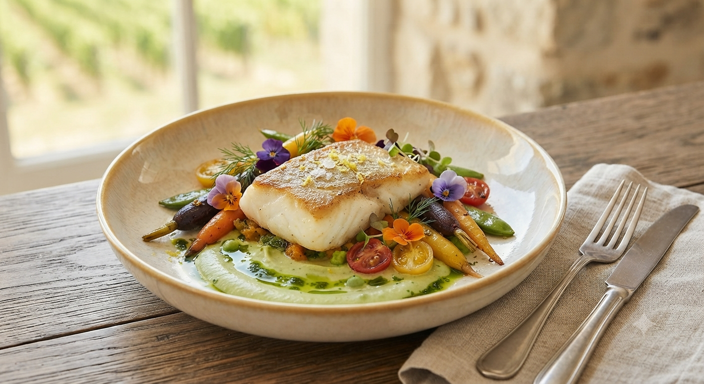
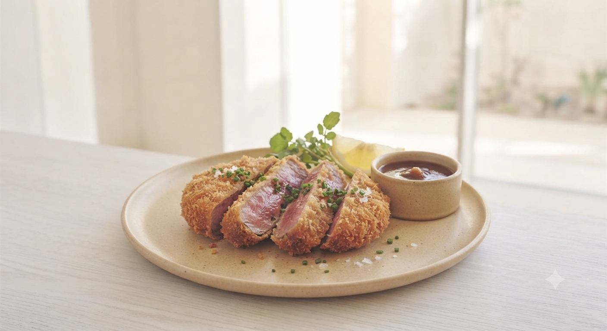
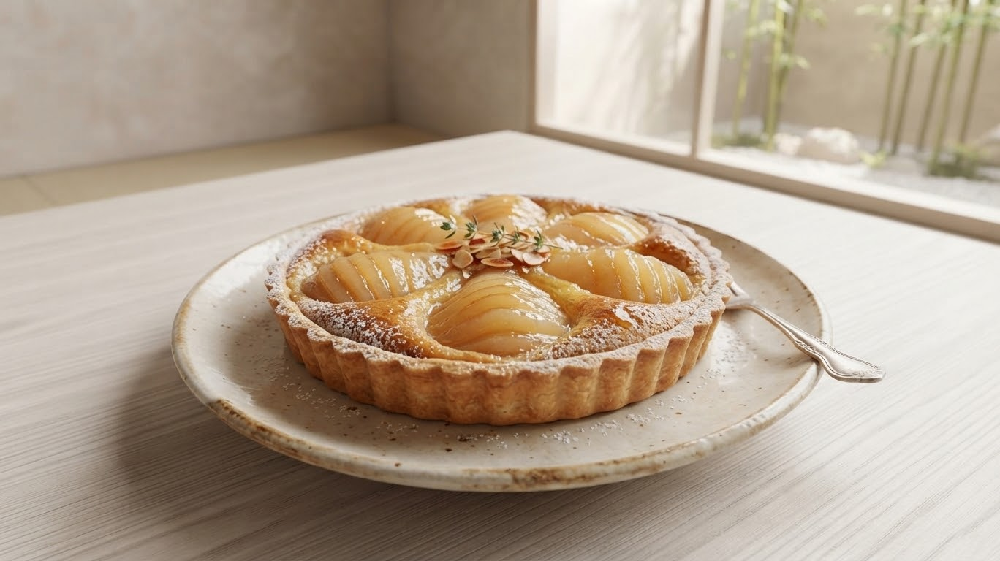

お魚ランチ
¥2,200三陸産の白身魚をパリッとソテー。バターとオリーブオイルの風味が香る、上品な一皿です。
スープ / サラダ / デザート / ドリンク

お電話、またはホットペッパーにて承っております
Since 1999
北上で愛されて四半世紀
三陸の海が育んだ魚介、地元の農家さんが土からこだわった野菜。私たちの料理に欠かせないのは、岩手の豊かな大地と海の恵みです。
プチコレットが大切にしているのは、その「素材」の味を最大限に引き出すこと。25年変わらぬ想いで、一皿一皿、丁寧に心を込めてお作りしています。
アットホームな清潔空間
ご家族、小さなお子様連れも歓迎です
コク深く、鮮やかな黄色の地卵を贅沢に使用。プロの火加減で究極の食感へ。
具材の旨味が凝縮されたライスは、卵との相性を計算し尽くした絶妙な味付け。
「お腹いっぱい食べてほしい」という店主の想い。大満足のサイズ感です。
定番のケチャップから、デミグラスまで。その日の気分でお選びいただけます。
スープ、サラダ、デザートにコーヒーまで。日常に「ちょっとした贅沢」を添える、プチコースをご堪能ください。

三陸産の白身魚をパリッとソテー。バターとオリーブオイルの風味が香る、上品な一皿です。
スープ / サラダ / デザート / ドリンク

驚くほど柔らかな肉質。ジューシーなのに重くない、地元産「ありすポーク」を秘伝のタレで。
スープ / サラダ / デザート / ドリンク

甘さ控えめで素材の味を活かしたケーキ。コーヒーとの相性抜群で、テイクアウトも人気です。
チーズ / ショコラ / 季節のフルーツ
「プチコレットの味をご自宅やオフィスでも楽しみたい」というたくさんのご要望にお応えし、特製テイクアウト弁当の提供を準備しております。
お店の味そのままに！冷めてもふわトロ感が楽しめる独自製法仕上げの贅沢オムライス弁当です。
地元ブランド豚「ありすポーク」のジューシーなソテーを豪快に乗せた、会議や特別な日のための満足弁当。
三陸産魚介のポワレや手作り惣菜を詰め合わせた、ホームパーティーやご家族の集まりに最適な特製オードブル。
開始時期やメニュー詳細は公式Instagramにて順次お知らせいたします！
営業時間 / 定休日
11:00〜14:50/17:00〜20：50
定休日：月曜日
住所
〒024-0022 岩手県北上市黒沢尻3丁目1-37
北上駅から車で5分 / 駐車場完備
電話番号
019-764-3958© 2024 Petty Colette. Created for Japanese local flavors.